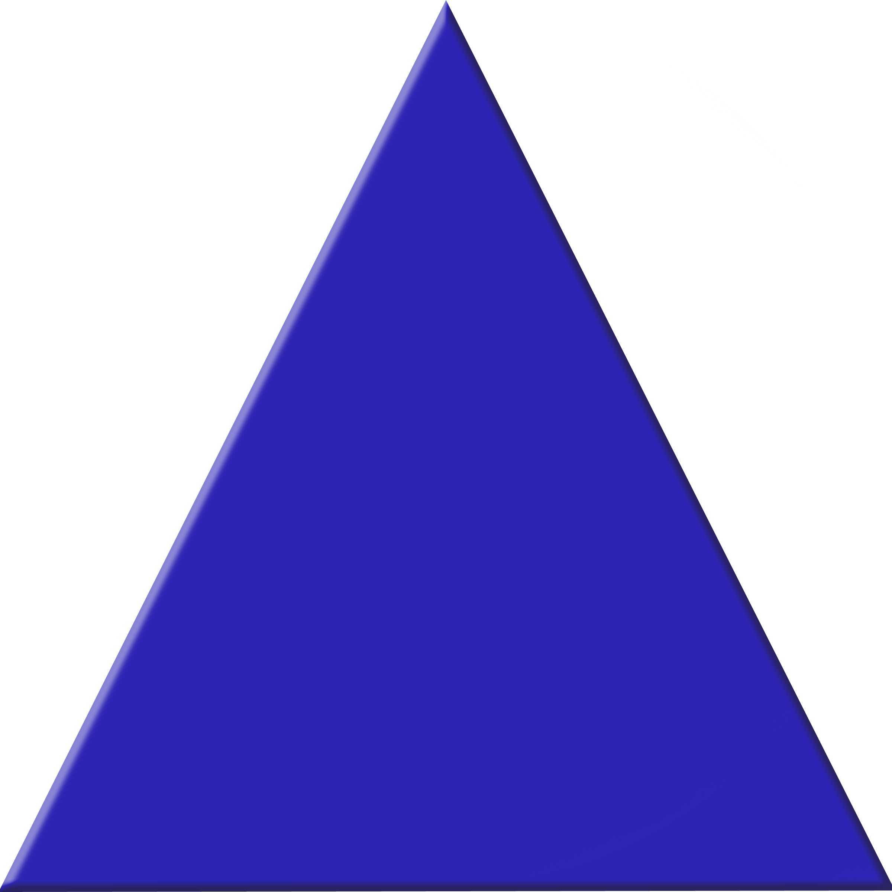

EL COLOR AZUL

En el sistema aditivo de síntesis de color, en el cual los colores se obtienen mezclando luz de color en lugar de pigmentos, el azul es un color primario, junto con el rojo y el verde.